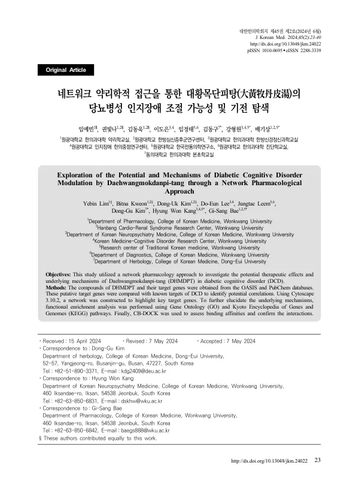

Exploration of the Potential and Mechanisms of Diabetic Cognitive Disorder Modulation by Daehwangmokdanpi-tang through a Network Pharmacological Approach
Lim Y, Kweon B, Kim DU, Lee DE, Leem J, Kim DG, Kang HW, Bae GS
Journal of Korean Medicine 45(2):23-40

첫 장 · 오픈액세스First page · open access
논문 소개Summary
대황목단피탕이 당뇨병성 인지장애에 작용할 수 있는지를 네트워크 약리학으로 탐색한 연구입니다. 오아시스와 펍켐에서 이 처방의 성분과 표적 유전자를 모아 당뇨병성 인지장애의 알려진 표적과 견주었습니다. 성분 27종에서 관련 유전자 439개가 확인되었고 그 가운데 373개가 질환 유전자 집합과 상호작용했습니다. 유전자 온톨로지와 KEGG 경로 분석에서는 세포자멸사 조절과 사이토카인 매개 신호전달, 당뇨 합병증의 AGE-RAGE 신호전달이 핵심 표적 유전자 18개의 기능 경로로 지목되었습니다. 결합력은 분자 도킹으로 확인했습니다. 계산으로 세운 가설이므로 실제 효과는 후속 실험으로 검증해야 합니다.
A network pharmacology study exploring whether Daehwangmokdanpi-tang might act on diabetic cognitive disorder. Compounds of the formula and their target genes were gathered from the OASIS and PubChem databases and compared with known targets of the condition. Twenty-seven compounds yielded 439 related genes, of which 373 interacted with the disease gene set. Gene Ontology and KEGG pathway analysis identified regulation of the apoptotic process, cytokine-mediated signalling, and the AGE-RAGE signalling pathway in diabetic complications as the functional pathways of 18 key target genes, and molecular docking assessed binding affinities. Being a hypothesis built by computation, the actual effect awaits verification in subsequent experiments.
인용Cite
Lim Y, Kweon B, Kim DU, Lee DE, Leem J, Kim DG, Kang HW, Bae GS. Exploration of the Potential and Mechanisms of Diabetic Cognitive Disorder Modulation by Daehwangmokdanpi-tang through a Network Pharmacological Approach. Journal of Korean Medicine. 2024;45(2):23-40. doi:10.13048/jkm.24022